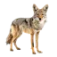

Animal Grimoire

JackalsOverview
The jackal holds a central place in Egyptian magick and funerary practice.
Anubis and Wepwawet
The jackal was identified with two gods who look almost identical in Egyptian art:
- Anubis: Responsible for embalming and wrapping the corpse of Osiris
- Wepwawet: "Opener of the Ways" or "Route-finder," a sort of sniffer dog to the supernatural realm
Masters of Secrets
A jackal stretched out alert on top of a chest was the hieroglyphic sign for hery-seshta ("master of secrets"), the vital skill that priest-magicians needed to perform effective rituals.
Jackals in the Solar Barque
Jackals towed the sun-god's boat through the sky, their tails sometimes represented as rearing cobras.
Tutankhamun's Jackal
A wooden jackal sculpture draped in linen and adorned with a floral wreath guarded the innermost room of Tutankhamun's tomb. Inside the chest it rested upon were faience amulets, shabti-figures, djed-amulets, and jewelry, the remains of materials used in ritual performance during the funeral.
Carrier of the God's Spirit
The jackal-headed Anubis is among the first images the jackal calls to mind, and wild dogs were thought to carry the spirit of this god. Swift runners able to cover great distances in little time, jackals are also renowned for their aggression.
Voice of the Night
The jackal has an unearthly howl, often heard in the dead of night, its favored hunting time. Because it scavenges upon corpses and was known to haunt graveyards, the jackal became bound to the dead, fittingly so, since Anubis watched over the dead and guided them toward the other world.
Companion of Kali
In Hinduism, jackals accompany the goddess Kali in her guise as the destroyer.